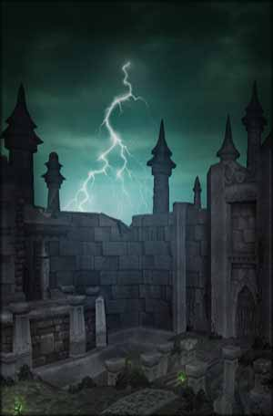

<html>
<head>
<META HTTP-EQUIV="Pragma" CONTENT="no-cache">
<META HTTP-EQUIV="Expires" CONTENT="-1">
<script>
var _
var data=[]
data.n=4
_=data[0]=[]
_.n="Discipline"
_=data[0][0]=[3]
_.n="Unbreakable Will"
_.d="Increases your chance to resist Stun, Fear, and Silence effects by $%."
_.m=5
_.x=2
_.y=0
_=data[0][1]=[5]
_.n="Wand Specialization"
_.d="Increases your damage with Wands by $%."
_.m=5
_.x=3
_.y=0
_=data[0][2]=[4]
_.n="Silent Resolve"
_.d="Reduces the threat generated by your spells by $%."
_.m=5
_.x=1
_.y=5
_=data[0][3]=[15]
_.n="Improved Power Word: Fortitude"
_.d="Increases the effect of your Power Word: Fortitude and Prayer of Fortitude spells by $%."
_.m=2
_.x=2
_.y=5
_=data[0][4]=[5]
_.n="Improved Power Word: Shield"
_.d="Increase the damage absorbed by your Power Word: Shield by $%."
_.m=3
_.x=3
_.y=5
_=data[0][5]=[50,10]
_.n="Martyrdom"
_.d="Gives you a $% chance to gain the Focused Casting effect that lasts for 6 sec after being the victim of a melee or ranged critical strike. The Focused Casting effect prevents you from losing casting time when taking damage and increases resistance to Interrupt effects by $%."
_.m=2
_.x=4
_.y=5
_=data[0][6]=[]
_.n="Inner Focus"
_.d="When activated, reduces the Mana cost of your next spell by 100% and increases its critical effect chance by 25% if it is capable of a critical effect."
_.m=1
_.x=2
_.y=10
_.t=['Instant','3 min cooldown']
_=data[0][7]=[5]
_.n="Meditation"
_.d="Allows $% of your Mana regeneration to continue while casting."
_.m=3
_.x=3
_.y=10
_=data[0][8]=[10]
_.n="Improved Inner Fire"
_.d="Increases the beneficial effects of your Inner Fire spell by $%."
_.m=3
_.x=1
_.y=15
_=data[0][9]=[2]
_.n="Mental Agility"
_.d="Reduces the mana cost of your instant cast spells by $%."
_.m=5
_.x=2
_.y=15
_=data[0][10]=[0.25]
_.n="Improved Mana Burn"
_.d="Reduces the casting time of your Mana Burn spell by $ sec."
_.m=2
_.x=4
_.y=15
_=data[0][11]=[2]
_.n="Mental Strength"
_.d="Increases your maximum Mana by $%."
_.m=5
_.x=2
_.y=20
_=data[0][12]=[]
_.n="Divine Spirit"
_.d="Holy power infuses the target, increasing their Spirit by 40 for 30 min."
_.m=1
_.x=3
_.y=20
_.z=4
_.r=[7,3]
_.t=['970 Mana','30 yd range','Instant cast']
_=data[0][13]=[1,1]
_.n="Force of Will"
_.d="Increases your spell damage by $% and the critical strike chance of your offensive spells by $%."
_.m=5
_.x=3
_.y=25
_=data[0][14]=[]
_.n="Power Infusion"
_.d="Infuses the target with power, increasing their spell damage and healing by 20%. Lasts 15 sec."
_.m=1
_.x=2
_.y=30
_.r=[11,5]
_.t=['20% of base Mana','30 yd range','Instant cast','3 min cooldown']
_=data[1]=[]
_.n="Holy"
_=data[1][0]=[35]
_.n="Healing Focus"
_.d="Gives you a $% chance to avoid interruption caused by damage while casting any healing spell."
_.m=2
_.x=1
_.y=0
_=data[1][1]=[5]
_.n="Improved Renew"
_.d="Increases the amount healed by your Renew spell by $%."
_.m=3
_.x=2
_.y=0
_=data[1][2]=[1]
_.n="Holy Specialization"
_.d="Increases the critical effect chance of your Holy spells by $%."
_.m=5
_.x=3
_.y=0
_=data[1][3]=[2]
_.n="Spell Warding"
_.d="Reduces all spell damage taken by $%."
_.m=5
_.x=2
_.y=5
_=data[1][4]=[0.1]
_.n="Divine Fury"
_.d="Reduces the casting time of your Smite, Holy Fire, Heal and Greater Heal spells by $ sec."
_.m=5
_.x=3
_.y=5
_=data[1][5]=[]
_.n="Holy Nova"
_.d="Causes an explosion of holy light around the caster, causing 181 to 209 Holy damage to all enemy targets within 10 yards and healing all party members within 10 yards for 302 to 350. These effects cause no threat."
_.m=1
_.x=1
_.y=10
_.z=6
_.t=['750 Mana','','Instant cast']
_=data[1][6]=[[8,16,25]]
_.n="Blessed Recovery"
_.d="After being struck by a melee or ranged critical hit, heal $% of the damage taken over 6 sec."
_.m=3
_.x=2
_.y=10
_=data[1][7]=[[8,16,25]]
_.n="Inspiration"
_.d="Increases your target's armor by $% for 15 sec after getting a critical effect from your Flash Heal, Heal, Greater Heal, or Prayer of Healing spell."
_.m=3
_.x=4
_.y=10
_=data[1][8]=[10]
_.n="Holy Reach"
_.d="Increases the range of your Smite and Holy Fire spells and the radius of your Prayer of Healing and Holy Nova spells by $%."
_.m=2
_.x=1
_.y=15
_=data[1][9]=[5]
_.n="Improved Healing"
_.d="Reduces the Mana cost of your Lesser Heal, Heal, and Greater Heal spells by $%."
_.m=3
_.x=2
_.y=15
_=data[1][10]=[5]
_.n="Searing Light"
_.d="Increases the damage of your Smite and Holy Fire spells by $%."
_.m=2
_.x=3
_.y=15
_.r=[4,5]
_=data[1][11]=[10]
_.n="Improved Prayer of Healing"
_.d="Reduces the Mana cost of your Prayer of Healing spell by $%."
_.m=2
_.x=1
_.y=20
_=data[1][12]=[]
_.n="Spirit of Redemption"
_.d="Upon death, the priest becomes the Spirit of Redemption for 10 sec. The Spirit of Redemption cannot move, attack, be attacked or targeted by any spells or effects. While in this form, the priest can cast any healing spell free of cost. When the effect ends, the priest dies."
_.m=1
_.x=2
_.y=20
_=data[1][13]=[5]
_.n="Spiritual Guidance"
_.d="Increases spell damage and healing by up to $% of your total Spirit."
_.m=5
_.x=3
_.y=20
_=data[1][14]=[2]
_.n="Spiritual Healing"
_.d="Increases the amount healed by your healing spells by $%."
_.m=5
_.x=3
_.y=25
_=data[1][15]=[]
_.n="Lightwell"
_.d="Creates a holy Lightwell near the priest. Friendly targets can click the Lightwell to restore 1600 health over 10 sec. Being attacked cancels the effect. Lightwell lasts for 3 min or 5 charges."
_.m=1
_.x=2
_.y=30
_.z=3
_.r=[12,1]
_.t=['365 Mana','','1.5 sec cast','10 min cooldown']
_=data[2]=[]
_.n="Shadow"
_=data[2][0]=[20,['will','may']]
_.n="Spirit Tap"
_.d="Gives you a $% chance to gain a 100% bonus to your Spirit after killing a target that yields experience. For the duration, your Mana $ regenerate at a 50% rate while casting. Lasts 15 sec."
_.m=5
_.x=2
_.y=0
_=data[2][1]=[2]
_.n="Blackout"
_.d="Gives your Shadow damage spells a $% chance to stun the target for 3 sec."
_.m=5
_.x=3
_.y=0
_=data[2][2]=[[8,16,25]]
_.n="Shadow Affinity"
_.d="Reduces the threat generated by your Shadow spells by $%."
_.m=3
_.x=1
_.y=5
_=data[2][3]=[3]
_.n="Improved Shadow Word: Pain"
_.d="Increases the duration of your Shadow Word: Pain spell by $ sec."
_.m=2
_.x=2
_.y=5
_=data[2][4]=[2]
_.n="Shadow Focus"
_.d="Reduces your target's chance to resist your Shadow spells by $%."
_.m=5
_.x=3
_.y=5
_=data[2][5]=[2]
_.n="Improved Psychic Scream"
_.d="Reduces the cooldown of your Psychic Scream spell by $ sec."
_.m=2
_.x=1
_.y=10
_=data[2][6]=[0.5]
_.n="Improved Mind Blast"
_.d="Reduces the cooldown of your Mind Blast spell by $ sec."
_.m=5
_.x=2
_.y=10
_=data[2][7]=[]
_.n="Mind Flay"
_.d="Assault the target's mind with Shadow energy, causing 426 damage over 3 sec and slowing the target to 50% of their movement speed."
_.m=1
_.x=3
_.y=10
_.z=6
_.t=['205 Mana','20 yd range','Channeled']
_=data[2][8]=[3]
_.n="Improved Fade"
_.d="Decreases the cooldown of your Fade ability by $ sec."
_.m=2
_.x=2
_.y=15
_=data[2][9]=[[6,13,20]]
_.n="Shadow Reach"
_.d="Increases the range of your Shadow damage spells by $%."
_.m=3
_.x=3
_.y=15
_=data[2][10]=[20]
_.n="Shadow Weaving"
_.d="Your Shadow damage spells have a $% chance to cause your target to be vulnerable to Shadow damage. This vulnerability increases the Shadow damage dealt to your target by 3% and lasts 15 sec. Stacks up to 5 times."
_.m=5
_.x=4
_.y=15
_=data[2][11]=[]
_.n="Silence"
_.d="Silences the target, preventing them from casting spells for 5 sec."
_.m=1
_.x=1
_.y=20
_.r=[5,2]
_.t=['225 Mana','20 yd range','Instant cast','45 sec cooldown']
_=data[2][12]=[]
_.n="Vampiric Embrace"
_.d="Afflicts your target with Shadow energy that causes all party members to be healed for 20% of any Shadow damage you deal for 1 min."
_.m=1
_.x=2
_.y=20
_.t=['40 Mana','30 yd range','Instant cast','10 sec cooldown']
_=data[2][13]=[5]
_.n="Improved Vampiric Embrace"
_.d="Increases the percentage healed by Vampiric Embrace by an additional $%."
_.m=2
_.x=3
_.y=20
_.r=[12,1]
_=data[2][14]=[2]
_.n="Darkness"
_.d="Increases your Shadow spell damage by $%."
_.m=5
_.x=3
_.y=25
_=data[2][15]=[]
_.n="Shadowform"
_.d="Assume a Shadowform, increasing your Shadow damage by 15% and reducing Physical damage done to you by 15%. However, you may not cast Holy spells while in this form."
_.m=1
_.x=2
_.y=30
_.r=[12,1]
_.t=['40% of base Mana','','Instant cast','1.5 sec cooldown']
</script>
</head>
<body>
<!--[if IE]>



<![endif]-->
</body>
</html>